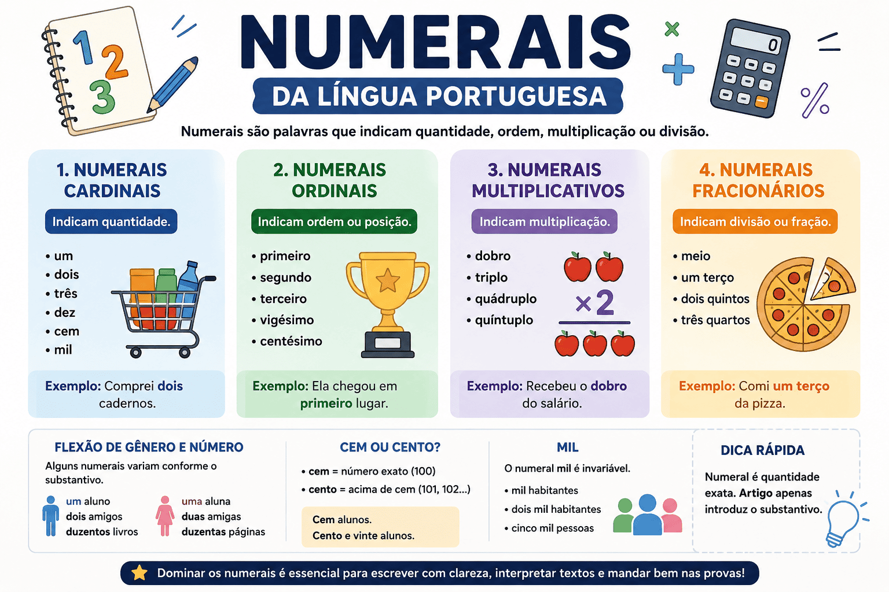

Numerais da Língua Portuguesa: Guia Completo para ENEM e Vestibulares
Os numerais constituem uma classe de palavras utilizada para indicar quantidade, ordem, multiplicação ou divisão. Embora pareçam simples, seu emprego envolve diversas regras gramaticais que costumam ser cobradas em provas do ENEM, vestibulares e concursos públicos.

Além de aparecerem em textos informativos, científicos, literários e jornalísticos, os numerais exercem importante papel na organização das ideias e na precisão das informações. Conhecer sua classificação e seu funcionamento ajuda a evitar erros de concordância e interpretação textual.
O que são numerais?
Numeral é a classe gramatical que expressa uma ideia numérica, indicando:
- Quantidade de seres ou objetos;
- Ordem em uma sequência;
- Multiplicação;
- Divisão ou fração.
Definição:
Numeral é a palavra que exprime quantidade exata, posição, multiplicação ou divisão em relação aos seres.
Classificação dos numerais
Os numerais dividem-se em quatro categorias principais.
1. Numerais cardinais
Indicam quantidade exata.
| Numeral | Exemplo |
|---|---|
| um | Tenho um livro. |
| dois | Comprei dois cadernos. |
| dez | Há dez alunos presentes. |
| cem | A biblioteca possui cem obras raras. |
2. Numerais ordinais
Indicam posição ou ordem.
| Numeral | Exemplo |
|---|---|
| primeiro | Ela chegou em primeiro lugar. |
| segundo | Leia o segundo capítulo. |
| vigésimo | Hoje é o vigésimo dia do mês. |
3. Numerais multiplicativos
Indicam multiplicação da quantidade.
| Numeral | Exemplo |
|---|---|
| dobro | Recebeu o dobro do salário. |
| triplo | O terreno vale o triplo. |
| quádruplo | A produção aumentou em quádruplo. |
4. Numerais fracionários
Indicam divisão de um todo.
| Numeral | Exemplo |
|---|---|
| meio | Bebi meio litro de água. |
| um terço | Consumiu um terço da pizza. |
| dois quintos | Percorreu dois quintos do trajeto. |
Flexão dos numerais
Os numerais podem variar em gênero e número conforme o substantivo ao qual se referem.
| Masculino | Feminino |
|---|---|
| um aluno | uma aluna |
| primeiro capítulo | primeira página |
| duzentos livros | duzentas páginas |
Os numerais um, dois, duzentos, trezentos, bem como todos os ordinais, apresentam flexão de gênero.
Cardinal ou artigo?
Uma dúvida frequente ocorre entre o numeral "um" e o artigo indefinido "um".
| Artigo | Numeral |
|---|---|
| Um menino chegou. | Tenho apenas um irmão. |
Quando apenas introduz o substantivo sem indicar quantidade específica, trata-se de artigo. Quando expressa quantidade exata, é numeral.
Numeral ou pronome?
Algumas palavras podem assumir diferentes classes gramaticais dependendo do contexto.
| Frase | Classe |
|---|---|
| Tenho dois livros. | Numeral |
| Tenho alguns livros. | Pronome indefinido |
Emprego dos numerais
Os numerais aparecem em diversas situações comunicativas:
- Datas;
- Capítulos de livros;
- Estatísticas;
- Resultados esportivos;
- Pesquisas científicas;
- Documentos oficiais;
- Textos jornalísticos.
Casos especiais
Milhão, bilhão e trilhão
Esses termos funcionam como substantivos numerais e exigem complemento introduzido pela preposição de.
- Um milhão de habitantes.
- Dois bilhões de reais.
- Três trilhões de estrelas.
Cem ou cento?
- Cem: número exato.
- Cento: acima de cem.
| Forma correta |
|---|
| Cem alunos. |
| Cento e cinco alunos. |
| Cento e cinquenta livros. |
Mil
O numeral mil não varia.
- Mil habitantes.
- Dois mil habitantes.
- Cinco mil pessoas.
Principais dúvidas
| Forma correta | Forma incorreta |
|---|---|
| duzentas páginas | duzentos páginas |
| primeira etapa | primeiro etapa |
| meia hora | meio hora |
| dois terços | dois terço |
Numerais nas provas do ENEM
As questões costumam explorar:
- Classificação dos numerais;
- Concordância nominal;
- Diferença entre numeral, artigo e pronome;
- Interpretação de gráficos e tabelas;
- Uso em textos científicos e jornalísticos.
Resumo
Os numerais são palavras que expressam quantidade, posição, multiplicação ou divisão. Eles classificam-se em cardinais, ordinais, multiplicativos e fracionários, podendo flexionar-se em gênero e número conforme o contexto. Dominar essa classe gramatical é essencial para compreender textos, produzir redações e resolver questões de gramática em avaliações como o ENEM, vestibulares e concursos.
Perguntas Frequentes (FAQ)
O que é numeral?
É a classe gramatical que indica quantidade, ordem, multiplicação ou divisão.
Quais são os quatro tipos de numerais?
Cardinais, ordinais, multiplicativos e fracionários.
"Um" é sempre numeral?
Não. Dependendo do contexto, pode funcionar como artigo indefinido.
Mil varia no plural?
Não. A forma permanece "mil": dois mil, cinco mil, dez mil.
Qual a diferença entre "cem" e "cento"?
"Cem" indica quantidade exata (100). "Cento" é usado em números superiores a 100, como cento e vinte.
Referências
- BECHARA, Evanildo. Moderna Gramática Portuguesa. Rio de Janeiro: Nova Fronteira.
- CUNHA, Celso; CINTRA, Lindley. Nova Gramática do Português Contemporâneo. Rio de Janeiro: Lexikon.
- INFANTE, Ulisses. Curso de Gramática Aplicada aos Textos. São Paulo: Scipione.
- ABAURRE, Maria Luiza; PONTARA, Marcela. Gramática: Texto, Análise e Construção de Sentido. São Paulo: Moderna.
Explore Outros Conteúdos
Continue seus estudos acessando outras seções do site Mestre Kira: